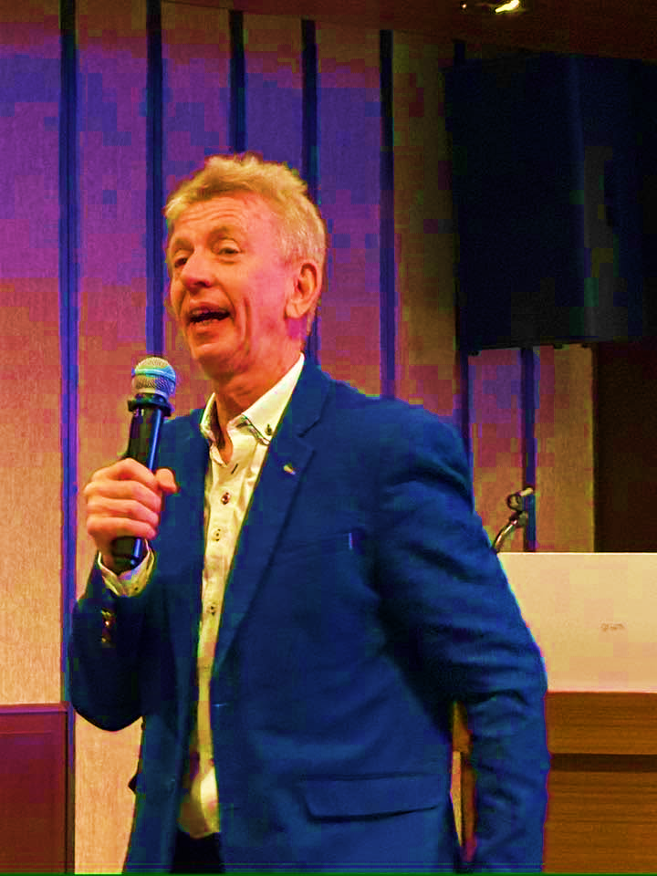
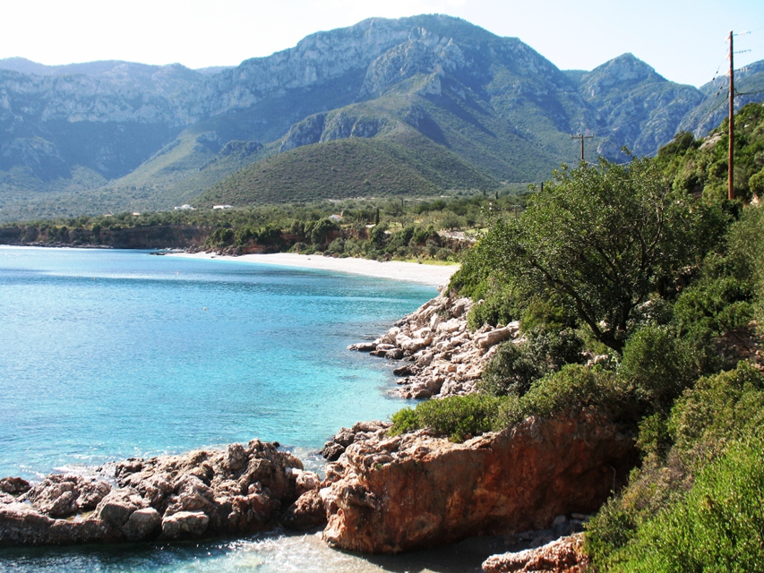
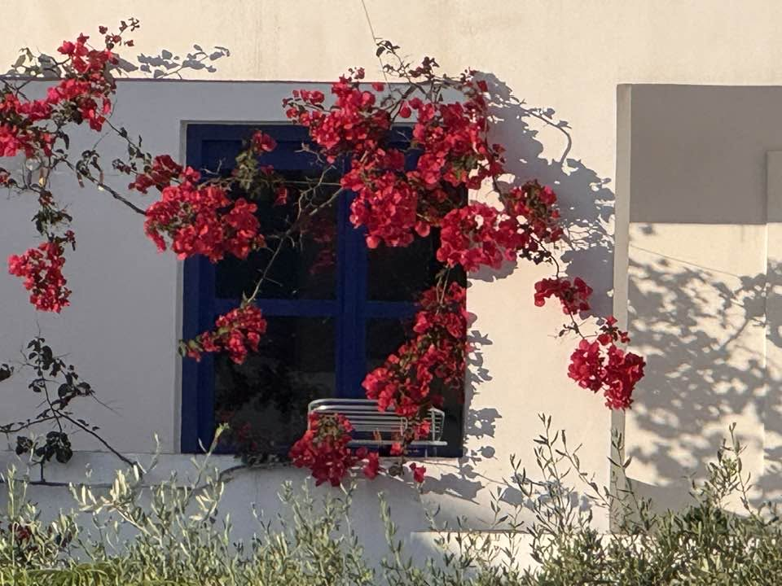

Mindful Consultant Services
About
My Approach
That question has shaped a consistent way of working, whatever the setting. At the heart of it is a simple belief: people are far more capable of growth than they're usually given credit for, even, and especially, in the midst of difficulty.
My training in Adlerian psychology shapes how I think about individuals: we are not simply shaped by what happens to us, but by the meaning we make of it, and the direction we choose to move in next. That same idea sits underneath my work in organisational crisis and resilience, a crisis doesn't have to define an organisation or the people in it; with the right support, it can become the foundation for something stronger. This is what the research on post-traumatic growth shows again and again, and what I've seen first-hand, working through some of the most difficult moments organisations face.
Mindfulness runs through all of it as a practical discipline, the capacity to notice what's actually happening, in this moment, rather than being swept along by old patterns or fear of what's next. Whether I'm working with an individual in therapy, training a leadership team, or supporting an organisation through a critical incident, the same underlying question is at work: how do we meet what's difficult with clarity and steadiness, rather than from a place of fear?

My Story
I've always wanted to make a positive difference to people's lives.
As a young man, that meant running Venture Scout units and youth clubs, and it's the thread that's run through everything since. That same instinct led me to qualify as a psychotherapist, then into leading organisational crisis response, and eventually to head up global health and wellbeing for major corporations including BT and Rolls-Royce Aerospace.
It's an unusual path on paper, but it's never felt like one to me, just a continuation of the same question I started with all those years ago: how do I help the person in front of me?
Qualifications & Training
- MA in Integrative Counselling and Psychotherapy
- Post-Graduate Diploma in Mindfulness-Based Approaches, Bangor University
- Licensed Teacher, Search Inside Yourself Leadership Institute
- Diploma in Clinical Supervision
- Global Health and Wellbeing Certificate
Professional Memberships
- MBACP (Accred) - Member of the British Association for Counselling and Psychotherapy
- FCIPD - Fellow of the Chartered Institute of Personnel and Development

Who I Work With
My work spans individuals and organisations, from a single person working through a difficult chapter, to a leadership team navigating crisis, to fellow practitioners deepening their own training. What connects them isn't the setting, it's the same underlying question: how do we help people meet what's difficult and grow through it.
Organisations I've Worked With
Accenture · BT · HSBC · IKEA · O2 · Rolls-Royce · The Conference Board · Vodafone

Outside of Work
When I'm not working, you'll usually find me training for the next Ironman, swimming somewhere cold, or walking a stretch of the Southwest Coast Path.
I have a long-standing interest in practical philosophy, and a particular fondness for Greece, I run a retreat there most years.